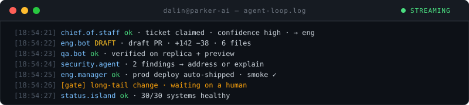

Preview of github.com/dalindev README
Dalin Huang
Senior AI Developer, Agent Systems
I build the AI behind Parker AI. And the agents that build it.
Parker AI is taking marketing fully agentic: data, research, production, and shipping, in loops that close themselves and improve with every run. My side of it: agent loops, self-hosted fine-tuned LLMs, evals across 50+ models, and data pipelines at billions of points a day. 10+ years shipping production systems.



The panels are replays for show, not live data.
→ dalin.dev · ask the model · explore the career clock · built with Claude Code (Fable 5.2)